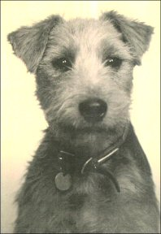
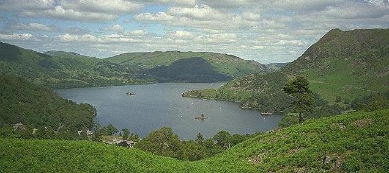

Home page
About Kelda
Gallery->Poppy &
others
Gallery->Douglas
Gallery->Agility
Your new
puppy
Grooming
FAQ
Kelda History
historyLakeland History
Breed Standard
Contact
Testimonials
Links.
Home page
About Kelda
Gallery->Poppy &
others
Gallery->Douglas
Gallery->Agility
Your new
puppy
Grooming
FAQ
Kelda History
historyLakeland History
Breed Standard
Contact
Testimonials
Links.
When the second world war broke out in September 1939 Miss Irene Morris owned Kildale Squiblet ("Anna") bought as a pet two years earlier, and with no thought of showing or breeding Lakelands. The photograph on the left is of Kildale Squiblet Miss Irene Morris had taken in about 1937. But with the war a wave of fear swept over the country and many loved pets were destroyed or sold to people who might be better placed to keep and feed them. The big kennels, too, were offering first class stock for a few pounds in the weekly dog papers.
Soon Miss Irene Morris realized that it could be devastating for a small breed like the Lakeland to lose so many good animals. She seized this opportunity to aquire top quality stock and decided to buy as many as she could afford. This gave Miss Morris a flying start to her breeding program as normally top breeders won't part with their best dogs. For most of the war years she was teaching in South Wales. In 1940 the Kennel Club granted Irene the affix of Kelda, and a few litters were bred.
The affix Kelda is named after Keldas hill in Cumbria, pictured below.
 |
This is a view from Keldas hill in
Cumbria which overlooks
Glenridding and Ullswater. Gowbarrow Park/Fell is directly across the
lake, beyond Silver Point, and Birk Fell up on the right. Round How
and
Glencoyne Park, on the lower slopes of Watermillock Common, are to the
left with the tree-covered Glenridding Dodd far left |
The dogs did very well on a diet of potato peelings collected daily from the village fish and chip shop, and boiled with nettle tops, root vegetables and bones and mixed with any stale bread or scraps which could be scrounged. Luckily there was also a fairly good supply of the extra stomachs of ruminants which the Welsh called manifolds and the Scots the bible because of its many leaves, enclosing the half digested grass.
There were no dog shows, of course, and that part of Wales is a hotbed of terrier fanciers, so there was often quite a gathering of people looking at the dogs, and handing on their expertise. The dog papers were pored over each week, and Noney Fleming and Lady Kitty Ritson kept the Lakeland Terrier notes going in DOG WORLD, while Catherine Fisher did the same in its contemporary Our Dogs.
When the war at last ended the Kelda dogs found themselves in the show ring. Ch Kelda Tavern Song born in March 1944, was the first to win her title. Later, among several others, one of her daughters, by Ch Whinlatter Kelda Bracken, was Ch Kelda Wings of Song. But in the week before Tavern Song won her first CC she made history - by winning BIS at the big all breed open show put on by Neath after the war, the first Lakeland to have such a win. Kelda Lakelands had arrived!
There was great interest in show stock when the war ended after six long years. The wise decision Miss Morris had made earlier to acquire and breed from the best, paid off, with the result that Kelda dogs and bitches were winning all over the country and then all over the world. There have been Kelda champions from Argentina to the United States, from Norway and Sweden to New Zealand and Australia, and the name is known and respected almost everywhere in Europe. Apart from the quality of the Kelda Lakelands, their superb temperament has endeared them to numerous owners who have again and again sought out a "Kelda" when their precious companion has passed on. Miss Morris has always held that temperament is of prime importance, at the same time as striving for the best in conformation and movement. The Kelda Lakelands are known to this day for their excellent temperaments and soundness. They have good coats and move freely, thanks to the emphasis on good shoulders, fronts and hindquarters. Above all, they have kept the lovely Lakeland head - not too long, with right, forward looking eyes and well set ears, whose tips just touch the cheeks.
As well as "Kelda" dogs being regarded as special, their owner was recognised too by being asked to judge twice at Crufts and becoming the President of The Lakeland Terrier Club, and then on to Patron a position she still holds. Latterly limitations of age (Miss Morris was 90 years in 1996) and transport difficulties had curtailed showing, and it seemed that the Kelda lines, with their direct link with the best in the past, might be forgotten. But a chance move to Devon, in 1986, she states, has saved them, and proved they are still worthy of a place at the top.
Two or three years after the move to Devon, two teenage sisters, Martha and Georgetta (Getta) Chamness, made Miss Morris's acquaintance, they helped her with her dogs, they were impressed by the Kelda Lakelands and fell in love with them. Getta then trained under the late Freddie Sills (an expert Lakeland breeder "Lakelyn", professional handler and judge), this was a priviledge to learn the art of show handstripping and preparation under such an expert. Miss Morris gave Freddie his first CC win with a dog he was handling, he always remembered this so was willing to have Georgetta to stay with him and his wife Julie and teach her so that she could help Miss Morris with grooming and showing. Miss Morris was still looking to the future so let the girls acquire some of her best blood lines, also let them share in the Kelda affix, in the hope that Kelda Lakelands will prosper for a long time.
Miss Irene Morris will be 99 years old on 12th November 2005.
Since the above was written, Miss Morris sadly passed away.
{kind=link}